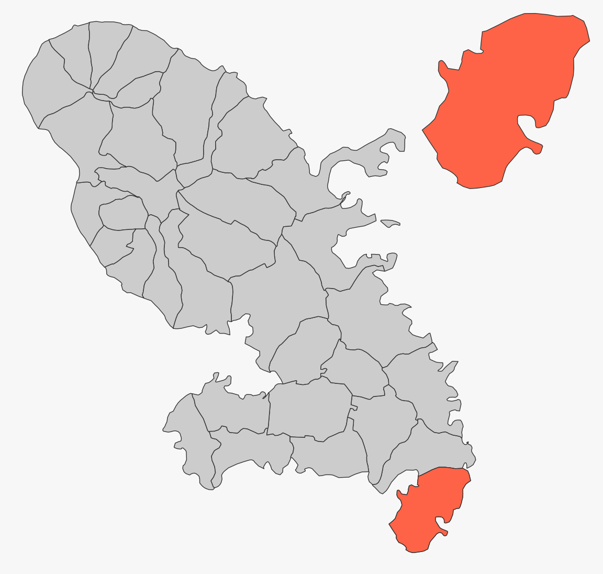

How to Create Inset Maps
Timothée Giraud
2023-01-23
Source:vignettes/web_only/how_to_create_inset_maps.Rmd
how_to_create_inset_maps.Rmdmf_inset*() functions create map
insets. mf_inset_on() starts the inset and
mf_inset_off() closes it.
If map layers have to be plotted after the inset (i.e after
mf_inset_off()), please use add = TRUE.
It is not possible to plot an inset within an inset.
It is possible to plot anything (base plots) within the inset, not only
map layers.
Size and Position
There is 2 solution for defining the size and position of an inset.
The first solution is based on x, pos and
cex arguments:
-
xis an sf object, the width/height ratio of the inset will match the width/height ratio ofxbounding box;
-
posmust be one of “bottomleft”, “left”, “topleft”, “top”, “bottom”, “bottomright”, “right” or”topright”;
-
cexdefines the share of the map width covered by the inset (0.5 means 50%).
In the following example we create an inset for a specific municipality in the topright corner of the map.
library(mapsf)
# set a theme
mf_theme("default", mar = c(0, 0, 0, 0))
# data import
mtq <- mf_get_mtq()
# Selection of a target municipality to display in the inset
mtq_target <- mtq[c(26), ]
# Display the base map
mf_map(mtq)
# display the target on the main map
mf_map(mtq_target, add = TRUE, col = "tomato")
# open the inset
mf_inset_on(x = mtq_target, pos = "topright", cex = .4)
# display the target municipality
mf_map(mtq_target, add = FALSE, col = "tomato")
# close the inset
mf_inset_off()
Once an inset is opened, map elements can be added to it.
Here we add a title, a shadow, a scale bar, other Martinique
municipalities and a frame.
# set a theme
mf_theme("dark")
# Selection of a target municipality to display in the inset
mtq_target <- mtq[c(26), ]
# Display the base map
mf_map(mtq)
# display the target on the main map
mf_map(mtq_target, add = TRUE, col = "tomato")
# open the inset
mf_inset_on(x = mtq_target, pos = "topright", cex = .4)
# center on on the target munucipality
mf_init(mtq_target)
# display all municipalities
mf_map(mtq, add = TRUE)
# display the target municipality shadow
mf_shadow(mtq_target, add = TRUE)
# display the target municipality
mf_map(mtq_target, add = TRUE, col = "tomato")
# display a title
mf_title("Saint-Anne", pos = "left", tab = TRUE, cex = .9, line = 1, inner = TRUE)
# display a scale bar
mf_scale(size = 2)
# dispaly a frame around the inset
box()
# close the inset
mf_inset_off()
# display the map layout of the main map
mf_title("Martinique Municipalities")
# display a scale bar
mf_scale(size = 5)
# display credits
mf_credits(txt = "T. Giraud, 2021")
The second solution to set the size and position of an inset is to
use the fig argument.fig coordinates (xmin, xmax, ymin, ymax) are expressed as
fractions of the mapping space (i.e. excluding margins).mf_inset_on(fig = c(0, 0.25, 0, 0.25)) will create an inset
on the bottomleft corner of the map and will cover a quarter of the map
in width and height.
In the following example we create an inset for a specific municipality in the bottom left corner of the map.
# set a theme
mf_theme("default", mar = c(0, 0, 0, 0))
# Display the base map
mf_map(mtq)
# open the inset
mf_inset_on(fig = c(0, 0.25, 0, 0.25))
# display a municipality
mf_map(mtq[9, ])
# add a frame
box()
# close the inset
mf_inset_off()
World Map Inset
It is easy to create an inset with a world map (see
mf_worldmap()) using x = "worldmap".
mf_map(mtq)
mf_inset_on(x = "worldmap")
mf_worldmap(mtq)
mf_inset_off()
Non-cartographic Insets
Insets can be used for regular plots. In the next map we create an inset with an histogram of the median income distribution using the map classification.
# create classes
bks <- mf_get_breaks(x = mtq$MED, nbreaks = 5, breaks = "quantile")
bks <- round(bks, digits = -2)
# define a color palette
pal <- hcl.colors(n = 5, palette = "Dark Mint", rev = TRUE)
# set a theme
mf_theme("candy")
fg <- mf_theme()$fg
# Create the map
mf_map(
x = mtq, var = "MED", type = "choro",
pal = pal, breaks = bks, leg_pos = NA
)
# start the inset
mf_inset_on(fig = c(0.75, .95, 0.84, .99))
# draw the histogram
par(mar = c(0, 0, 1.7, 0))
hist(mtq$MED,
breaks = bks, col = pal, border = fg, axes = F, labels = "",
xlab = "", ylab = "", main = ""
)
axis(
side = 1, at = bks, las = 2, tick = FALSE, line = -.9,
cex.axis = .7, col.axis = fg
)
title("Median Income\nin euros",
cex.main = .8, col.main = fg,
font.main = 1, adj = 0
)
# close the inset
mf_inset_off()
# Add map layout
mf_title("Wealth in Martinique, 2015", pos = "left")
mf_scale(5)
mf_credits(paste0(
"Sources: Insee and IGN, 2018\n",
"mapsf ", packageVersion("mapsf")
))